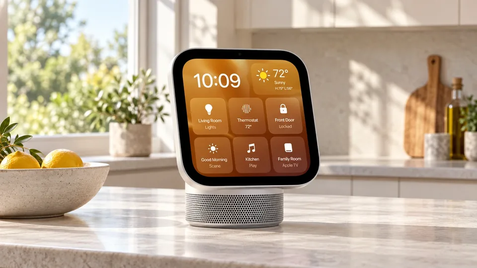

Apple HomeView Makes Personalized AI a Shared-Household Test
Apple’s $299 home hub brings Siri AI into a communal space. Recognizing a user is only the first step toward acting correctly on that person’s information.

Apple introduced HomeView on October 13, taking its personalized AI strategy into a space where a single screen may serve several people. The company says the seven-inch home hub starts at $299 in the United States and becomes available on November 13. Tabletop and wall-mounted versions are offered.
The product’s most consequential challenge is not displaying a weather forecast. It is deciding whose information is relevant, what a request permits and which actions are appropriate when several members of a household use the same device.
A personal assistant on a communal screen
Apple says HomeView recognizes up to six users and can present personal content through Siri AI, with compatible Apple Intelligence-enabled devices providing personal context. Reuters reports that private-data access requires the user’s iPhone on the same home network, and that Apple says the hub itself does not retain that private data.
These are announced capabilities and privacy claims, not findings from a TTN product test. Launch demonstrations establish what the company intends the experience to do. Daily use will establish how reliably it handles less orderly situations.
Shared use raises questions a private phone does not face in the same way. A visitor can be within hearing range. One person can ask a question after another has touched the screen. The cost of selecting the wrong context can exceed the inconvenience of an irrelevant answer.
Recognition and authorization should not be conflated
Identifying a person is one part of an interaction. Determining whether that person is permitted to view information or complete an action is another. An assistant can recognize a voice correctly and still misunderstand the scope of a request.
A hypothetical household example makes the issue concrete. Turning on a shared light is different from displaying a private message on a kitchen screen. Both requests may be convenient, but they need different treatment of access and visibility. This is a general design distinction, not a report of a HomeView failure.
A product evaluation should therefore examine how the system behaves at boundaries: guests, interruptions, ambiguous references and requests involving another person’s records. A polished demonstration with one speaker cannot resolve all of those cases.
Convenience has to survive dependence on the surrounding system
The purchase price is only one part of the decision. Buyers also need compatible devices, support for the functions they intend to use and a clear understanding of which tasks work when another device or service is unavailable.
The appropriate test is a routine the household actually repeats. An assistant that completes that routine consistently can justify its place in the home. A broader list of possible features may matter less if the few essential ones require frequent correction.
Privacy should be judged with similar specificity. Where information is processed, what is retained and who can access it are distinct questions. A reassuring general label is less useful than documented behavior for a particular feature.
The launch puts reliability ahead of conversation length
A communal assistant earns trust by choosing the right context and completing the intended task. More fluent conversation does not compensate for exposing the wrong information or acting on a mistaken instruction.
HomeView gives Apple a tangible product through which to demonstrate its AI strategy. The stronger evidence will come after shipping: repeatable household tasks, understandable permission boundaries and users who need less intervention to obtain a correct result. Until then, the announcement is a product promise with a defined price and release date.
Sources (2)
For informational purposes. This article is not investment advice.